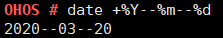

date¶
Command Function¶
This command is used to query and set the system date and time.
Syntax¶
date
date –help
date +[Format]
date -s_ _[YY/MM/DD]
date_ -s _[hh:mm:ss]__
date -r [Filename]
Parameter Description¶
Table 1 Parameters
Parameter | Description | Value Range |
|---|---|---|
–help | Uses the help. | N/A |
+Format | Prints the date and time based on Format. | Placeholders listed in –help. |
-s YY/MM/DD | Sets the system date and separates the year, month, and day by slashes (/). | >= 1970/01/01 |
-s hh:mm:ss | Sets the system time and separates the hour, minute, and second by colons (:). | N/A |
-r Filename | Queries the modification time of the Filename file. | N/A |
Usage¶
If the date parameter is not specified, the current system date and time are displayed by default.
The –help, +Format, -s, and -r parameters are mutually exclusive.
Example¶
Enter date +%Y–%m–%d.
Output¶
Figure 1 System date printed based on the specified format
